Wasserstein Median of Histograms
histmed.RdGiven multiple histograms represented as "histogram" S3 objects with
common breaks, compute their Fréchet (geometric) median under the
2-Wasserstein distance. In 1D, this is implemented by mapping histograms
to their quantile functions and running a Weiszfeld-type algorithm for
the geometric median in the Hilbert space of quantile
functions.
Arguments
- hists
a length-\(N\) list of histograms (
"histogram"objects) with identicalbreaks.- weights
a weight for each histogram; if
NULL(default), uniform weights are used. Otherwise, it should be a length-\(N\) vector of nonnegative weights.- L
number of quantile levels used to approximate the median (default: 2000). Larger
Lgives a more accurate approximation at increased computational cost.- ...
extra parameters including
- abstol
stopping criterion for iterations (default: 1e-8).
- maxiter
maximum number of iterations (default: 496).
- print.progress
logical; whether to show current iteration (default:
FALSE).
Examples
# \donttest{
#----------------------------------------------------------------------
# Binned from Two Gaussians
#
# Generate 12 histograms from N(-4,1/4) and 8 from N(4,1/4)
#----------------------------------------------------------------------
# COMMON SETTING
set.seed(100)
bk = seq(from=-10, to=10, length.out=20)
n_signal = 12
# GENERATE HISTOGRAMS WITH COMMON BREAKS
hist_all = list()
for (i in 1:n_signal){
hist_all[[i]] = hist(stats::rnorm(200, mean=-4, sd=0.5), breaks=bk)
}
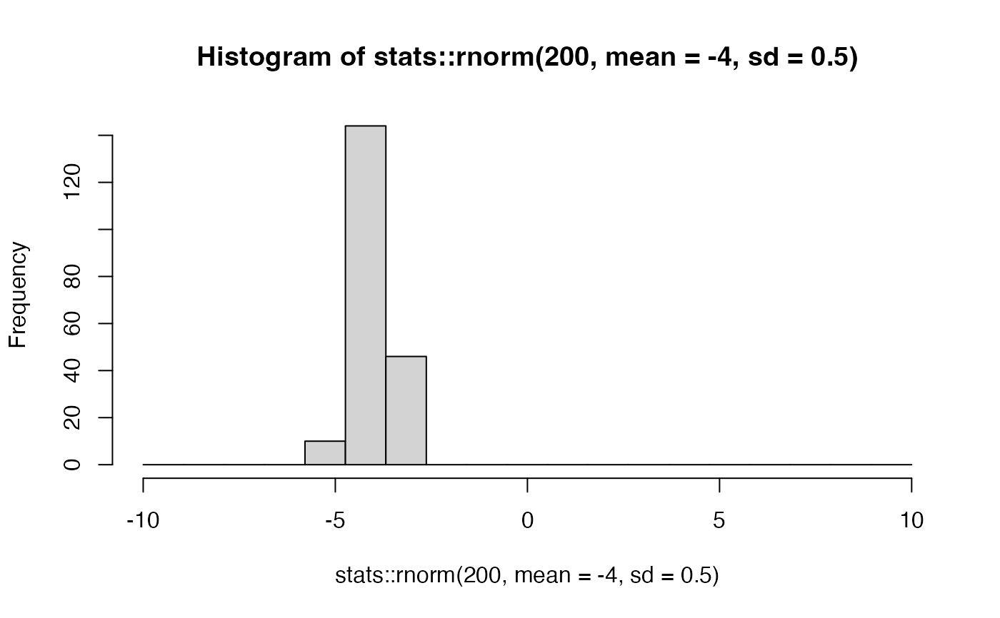
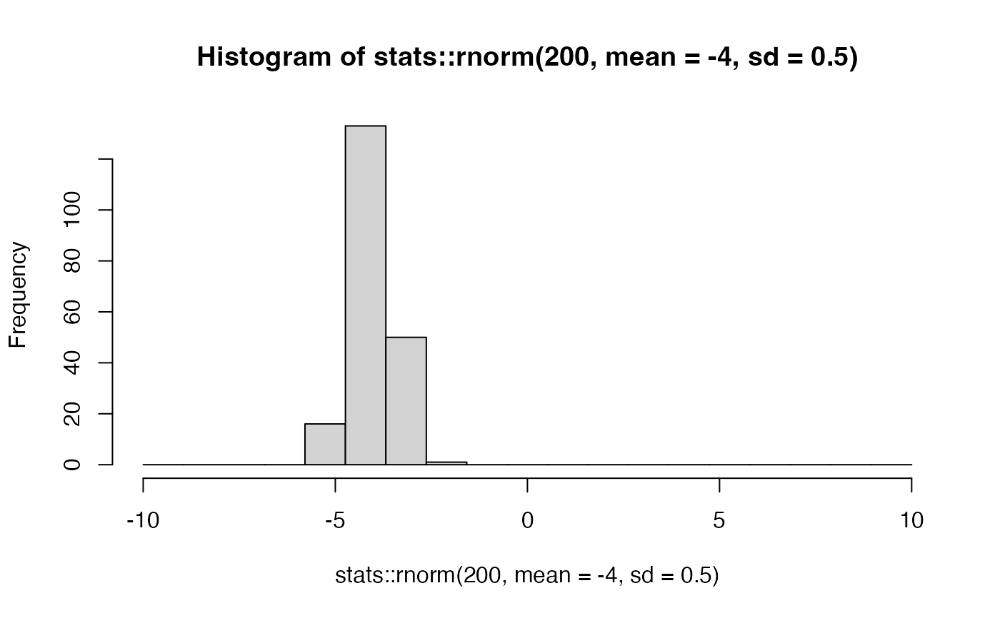
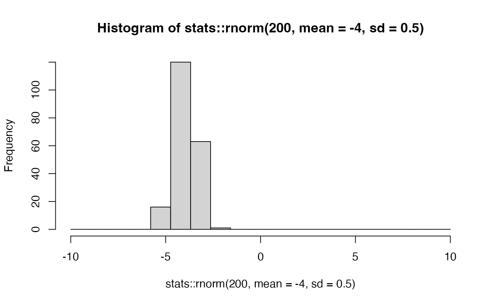
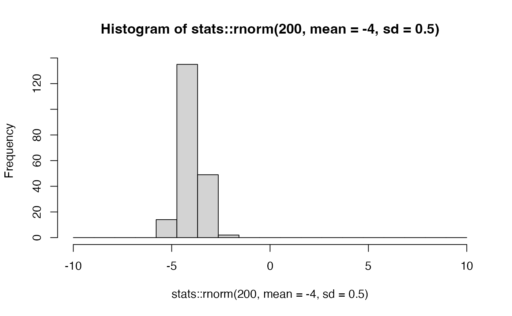
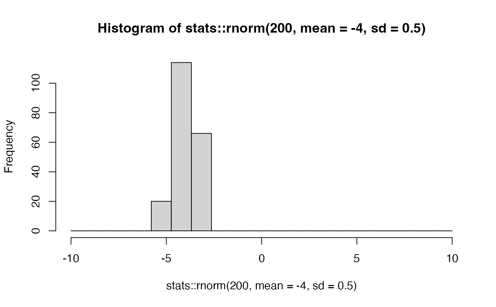
for (j in (n_signal+1):20){
hist_all[[j]] = hist(stats::rnorm(200, mean=+4, sd=0.5), breaks=bk)
}
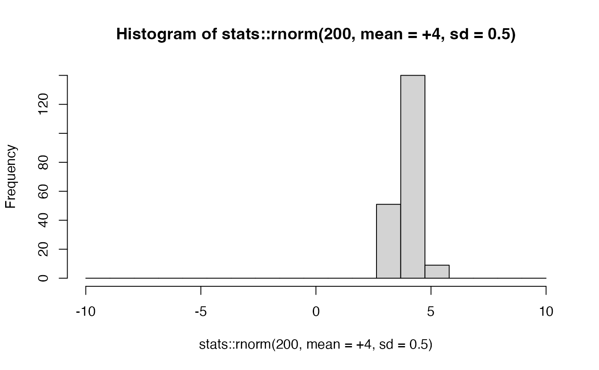
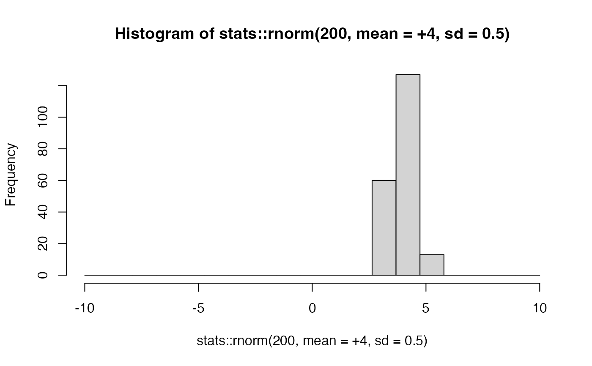
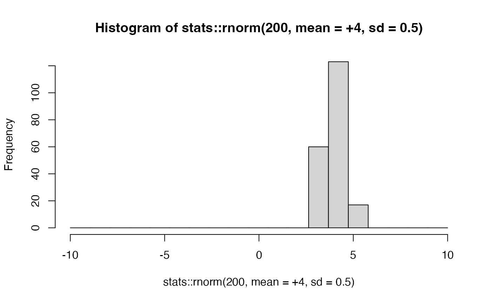
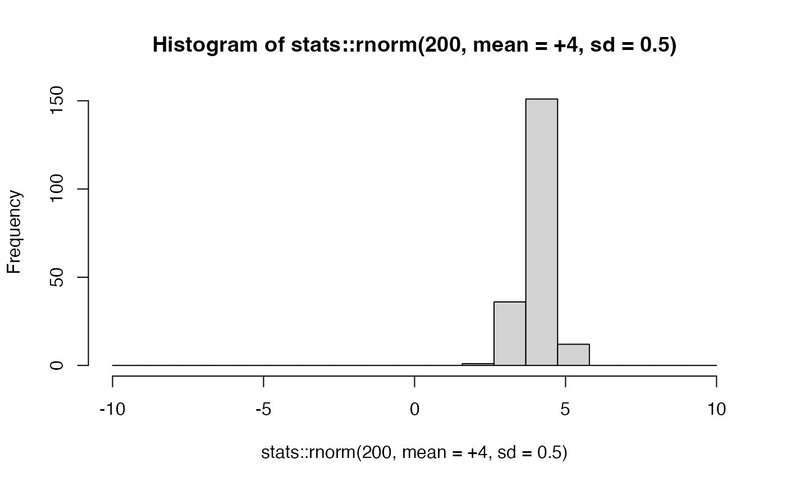
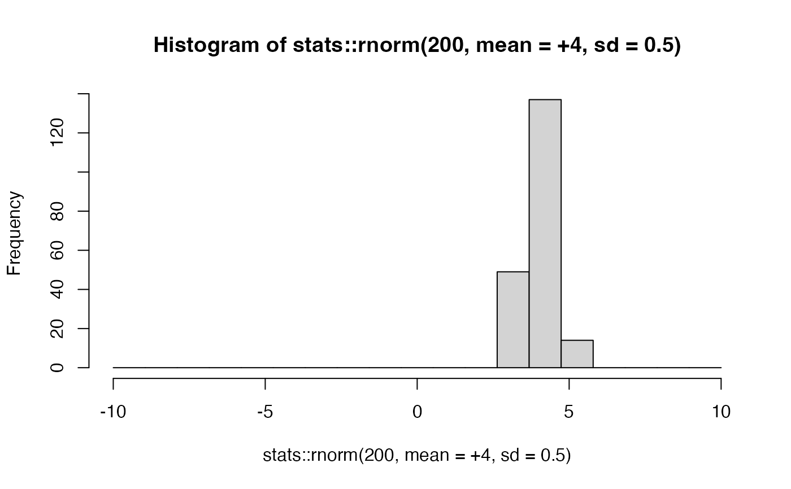
# COMPUTE THE BARYCENTER AND THE MEDIAN
h_bary = histbary(hist_all)
h_med = histmed(hist_all)
# VISUALIZE
xt <- round(h_med$mids, 1)
opar <- par(no.readonly=TRUE)
par(mfrow=c(1,3), pty="s")
barplot(hist_all[[1]]$density, col=rgb(0,0,1,1/4),
ylim=c(0, 0.75), main="Two Types", names.arg=xt)
barplot(hist_all[[20]]$density, col=rgb(1,0,0,1/4),
ylim=c(0, 0.75), add=TRUE)
barplot(h_med$density, names.arg=xt, main="Median", ylim=c(0, 0.75))
barplot(h_bary$density, names.arg=xt, main="Barycenter", ylim=c(0, 0.75))
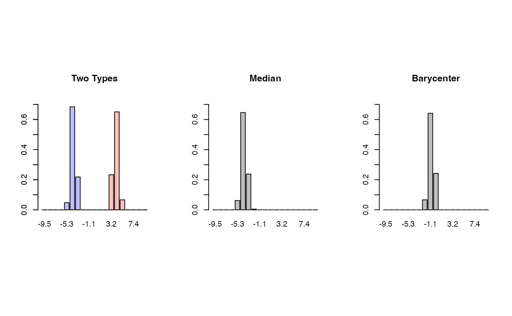
par(opar)
# }